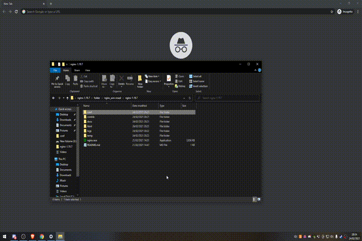
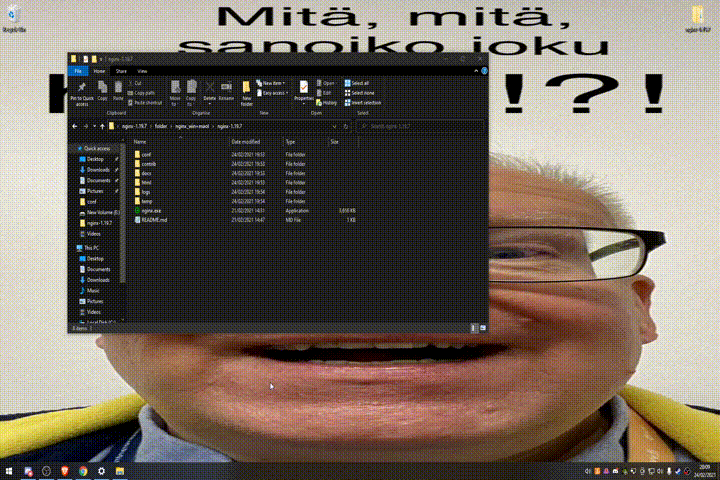

Now you can use your free MAOL(that I stole from abitti) by opening http://localhost in your browser. Enjoy :)))
Create a shortcut to the executable. Then open the run prompt (by hitting WIN+R) and type "shell:startup" in there and hit enter. Then copy the created shortcut into the directory opened by the command
